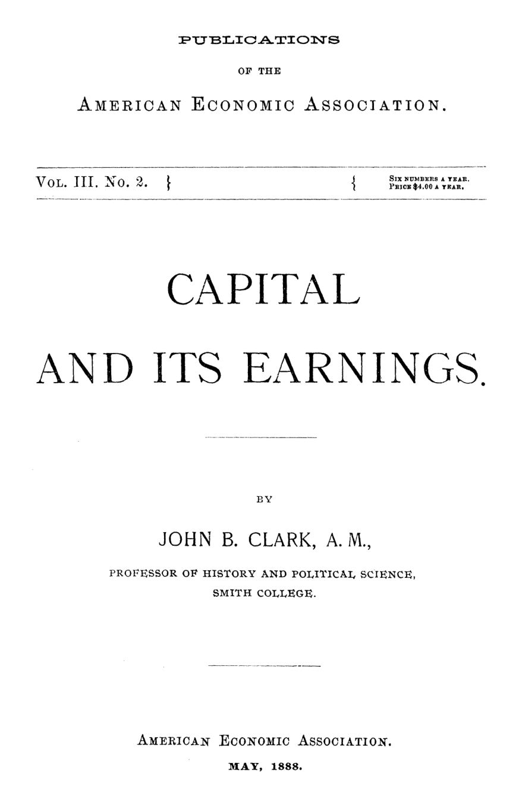

O capital muda de corpo, não de dono: Clark e a natureza do capital
Leitura: 8 min
Em 1888, John B. Clark separou o capital como fundo de valor das máquinas que o abrigam — e daí tirou argumentos contra o fundo de salários, a favor da vigilância sobre trustes e contra o imposto único sobre a terra.


Faça o inventário de uma loja de ferragens: serras, machadinhas, pregos, cada item com seu preço. Volte um ano depois. Quase nada da primeira lista estará na prateleira; se a soma dos novos valores for a mesma, o capital do comerciante está intacto. Se as mercadorias originais continuassem lá, ele estaria em apuros.
Com essa cena, John B. Clark, professor do Smith College, ilustra o ensaio publicado em maio de 1888 pela American Economic Association. A tese: a palavra capital designa duas coisas diferentes, e a economia da época trocava uma pela outra. Dessa confusão, diz ele, o socialismo tira seus argumentos.
O que, afinal, é capital?
Pergunte a um industrial quanto é o seu capital e ele responderá em dólares; pergunte onde está investido e ele listará prédios e máquinas. Para Clark, o primeiro é o capital puro: um fundo abstrato de valor, permanente. O segundo são os bens de capital, os recipientes concretos onde esse fundo mora por algum tempo. Se há meio milhão de dólares investidos hoje, haverá o mesmo daqui a vinte anos, embora quase nenhum dos objetos atuais sobreviva.
O fundo vive de transmigração, diz o autor: passa de um corpo a outro. Fica um instante no vapor, uma hora no carvão, semanas nos produtos inacabados, anos nas máquinas e décadas nos prédios. Só na terra pode permanecer indefinidamente.
Daí sai uma definição nova da velha distinção entre capital fixo e circulante. Circulante é o valor que lucra ao abandonar rapidamente sua forma: algodão que vira tecido e é vendido. Fixo é o que lucra permanecendo onde está: o tear, que o dono quer ver durar o máximo possível. O critério não é a duração, mas o que dá lucro.
De onde vem o salário de sábado à noite?
A doutrina do fundo de salários sustentava que os salários saem de um estoque de capital acumulado previamente, e que esse estoque limita quanto se pode pagar e a quantos. Clark responde com a semana de trabalho. O valor entregue ao operário no sábado à noite nasceu durante a semana. O fundo que paga o tecelão cresce à medida que o tear trabalha e o tecido se alonga; o do pedreiro está nas fiadas de tijolo que sobem na parede.
Os estoques de pão e roupa nas lojas existem, admite, mas são um estoque de troca, onde o salário recém-criado é gasto. Seu tamanho é conveniência, não limite. Só numa situação de fome, quando faltasse o alimento básico, esse estoque passaria a restringir trabalho e salários.
O alvo seguinte é a máxima de John Stuart Mill de que demanda por mercadorias não é demanda por trabalho. No exemplo clássico, um proprietário troca a construção de lagos artificiais pela compra de veludo, sem gerar empregos, por falta de capital para adiantar salários. Clark refaz a cena: se os proprietários anunciam em janeiro que gastarão em luxos os aluguéis de abril, fabricantes de seda e de carruagens contratam de imediato. O trabalho novo cria valor desde o primeiro dia.
“Uma demanda futura conhecida por artigos de qualquer tipo é [...] uma demanda presente por trabalho.” (a known future demand for articles of any kind is [...] a present demand for labor)
Qual a diferença entre renda e juro?
Juro, na definição de Clark, é o rendimento do capital puro, expresso em porcentagem e indiferente à forma do investimento. Mil dólares por ano são juros sobre vinte mil, estejam eles em navios, fazendas ou mercadorias. Renda, no sentido inglês de rent, mais próximo de aluguel, passa a ser o rendimento de qualquer instrumento concreto, expresso em soma fixa. A terra deixa de ser caso à parte.
A lei de Ricardo (a renda de um terreno é o que ele produz acima do pior terreno em uso) vale, diz o autor, para qualquer instrumento, de navios a lotes urbanos, mas só no curto prazo. No longo, o capital corre para onde rende mais e a concorrência iguala os juros.
A terra, por sua vez, é um agregado de utilidades. Solidez e superfície são originais e indestrutíveis, mas tão abundantes que não têm valor. O valor vem de quatro outras. Três podem ser fabricadas: a fertilidade da camada superficial, que se gasta e se repõe; a fertilidade permanente, obtida com diques, drenos e canais de irrigação; e o acesso aos mercados, que as ferrovias fabricam. A quarta, a proximidade literal de um mercado, como a de uma fazenda no condado de Westchester, perto de Nova York, é o único monopólio, e limitado.
Os Estados Unidos fornecem os exemplos. O valor do solo das pradarias é exportado em forma de trigo e farinha. Quando terra virgem capaz de dez safras de trigo sai por um dólar e um quarto o acre, adubar não compensa. E os aluguéis agrícolas já haviam caído em grande parte da Nova Inglaterra, porque tanta terra nova se tornou acessível. Fabricamos tanto valor de terra, ironiza Clark, que deprimimos o preço do que a natureza nos deu.
O que o Estado deve vigiar: o tamanho ou a forma?
A distinção desemboca na política. Ao indivíduo importa ter dez mil dólares ou um milhão, não se estão em ferrovias ou fazendas. Ao Estado, o inverso. Que alguém tenha cem milhões de dólares pesa menos do que o fato de essa soma estar concentrada em trigo, cobre, petróleo ou ferrovias.
“O monopólio reside na forma do capital, não em sua essência.” (Monopoly inheres in the form of capital, not in the essence of it.)
Clark duvida que pools e trustes encerrem a concorrência, mas pede vigilância incessante. Suprimi-los seria indesejável e impossível. O remédio é manter livre a entrada de capital de fora; se um truste se apoia em patentes ou tarifas protecionistas, são essas leis que merecem revisão. Quando a concentração numa forma ameaça a sociedade, o Estado pode desapropriar, pagando o valor e preservando o capital do dono.
O raciocínio inverso é o que ele rejeita com mais veemência: deixar o proprietário com a terra e, tributando-a até o valor pleno do aluguel, tomar-lhe todo o valor. É a proposta do imposto único, associada a Henry George. Para Clark, seria como o salteador que leva o dinheiro e devolve a bolsa vazia.
“Seria roubo? Não; seria a quintessência do roubo.” (Would it be robbery? No; it would be the quintessence of robbery.)
Na minha leitura
Na minha leitura, o ensaio vale menos pelas conclusões do que pela ferramenta. Separar o valor investido do objeto que o abriga ainda explica bem por que salários saem da produção corrente, e não de um cofre prévio, e por que a política de concorrência deve olhar barreiras de entrada, não o tamanho das fortunas: o regulador cuida de mercados, não de patrimônios.
O limite está na mesma ferramenta. Ao tratar como sagrado o valor investido na terra, Clark subestima o quanto ele depende de decisões coletivas, como a ferrovia que fabrica acessibilidade. O dilema permanece: como tributar ganhos criados pela coletividade sem desrespeitar a poupança de quem comprou o ativo a preço cheio.
Glossário
- Capital puro
- Na linguagem de Clark, o fundo abstrato de valor investido, que permanece enquanto troca de forma.
- Bens de capital
- Os instrumentos concretos (máquinas, prédios, matérias-primas) onde o capital puro está investido em dado momento.
- Capital fixo e circulante
- Fixo é o valor que lucra permanecendo na mesma forma; circulante, o que lucra passando rapidamente de uma forma a outra.
- Fundo de salários
- Doutrina clássica segundo a qual os salários saem de um estoque de capital acumulado antes do trabalho, que limitaria seu total.
- Renda (rent) e juro
- Renda é o rendimento de um instrumento concreto, em soma fixa; juro, o do capital puro, em porcentagem.
- Incremento não ganho
- Valorização da terra atribuída ao progresso social, e não ao trabalho do proprietário.
Fontes
- Capital and its Earnings (pp. 9–69). JSTOR · Internet Archive (PDF)
- Sumário da edição no JSTOR: Publications of the American Economic Association, vol. 3, nº 2.
Documento em domínio público (EUA, publicado antes de 1931), via JSTOR Early Journal Content e Internet Archive. Resumo e comentário do autor deste site, sem afiliação com a American Economic Association. Encontrou um erro? Escreva: a correção é publicada no próprio texto, com data.
← Nº 12 · Contar, classificar, julgar: três textos de Boston, 1887 Nº 14 · Salário, greve e armazém da mina: o trabalho visto em 1888 →